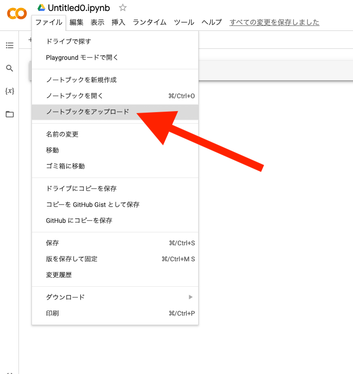
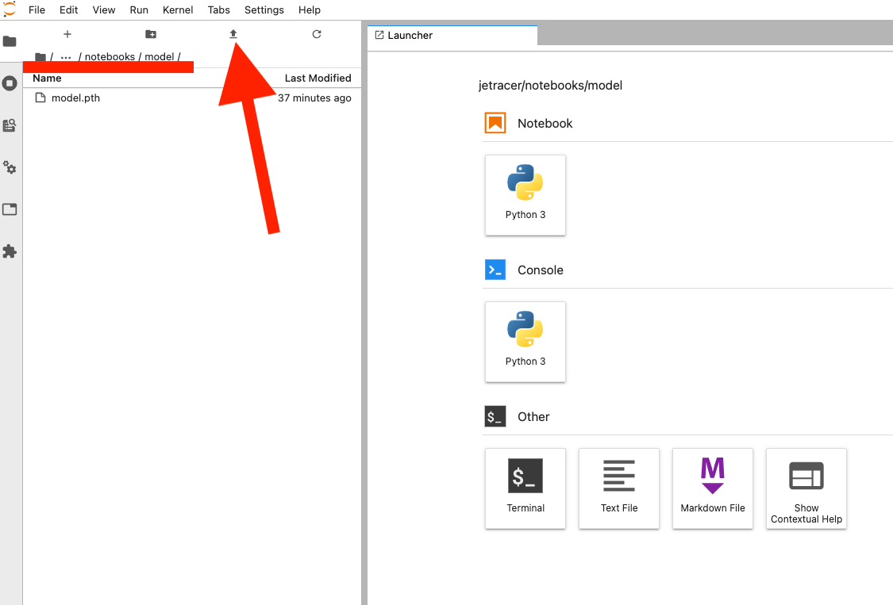

Google Colaboratoryを使ったクラウド学習(アルファ版)

Jetson Nanoだけでもエッジでの学習はできますが、インターネット環境があればクラウドでも学習はできます。
Google Colaboratory(Google Colab)を使用することでGPUなどのハードウェアなしで使うことができます。 Jupyter NoteBookは初めから用意されており、リッチな環境により学習時間を短縮、画像枚数もより多く扱うことが容易になります。 （※ただし、Goole Colaboratoryを無料でのご使用の場合は、使用するGPUや使用時間の制限を受けます。別：時間切れになりそうなときは、学習を保存する方法（工事中））
データセットをzipファイルにまとめる
収集したデータセットをクラウドへアップします。JetsonNanoの12_download_data.ipynbを開いて
データセット（画像データ）を一つのzipファイルにしてGoogle Colaboratoryへのファイルアップロードできるようにします。

ディレクトリ（タスク）をドロップダウンリストから選んで、圧縮したいデータセットフォルダを選択します。
ZIPボタンを押すと圧縮が始まり、圧縮が完了するとログに処理終了が表示されZIPフォルダが生成されます。
ZIPフォルダに圧縮されたファイルがあり、このファイルをGoogleドライブにアップロードします。

画像ファイル枚数によって終了時間が異なります。処理完了が出るまで待ちましょう。
Googleのマイドライブへデータセットをアップロードする
作成したzipファイルは、zipフォルダにあります。ダウンロードしたいファイルを右クリックDownloadを選択します。
一旦、お使いのパソコンにダウンロードします。
右クリックでダウンロードします。
Google Colaboratoryを使用する前に、事前にGoogleアカウントが必要です。Googleにログインします。
事前に、Googleドライブ内にJetRacer_WorkSpeaceという名前の専用のフォルダを作りましょう。
zipファイルをGoogleドライブにアップロードします。

新規ボタンをクリックして、作業フォルダ（etRacer_WorkSpeace/dataset/）を作り、そのフォルダ内にzipファイルをアップロードします。

（例）保存先のディレクトリ JetRacer_WorkSpeace/dataset/
Google Colaboratory を使うための準備
Google Colaboratoryにアクセスします。
https://colab.research.google.com/?hl=ja
Google Colaboratoryにようこそ

データセットのファイルのパス
Googleのマイドライブではなく、ファイルGoogle Colaboratoryのディレクトリにアクセスの場合は、
"drive/MyDrive/workspace_jetracer/dataset/......."
モデルの出力先は、modelディレクトリを作成しておきましょう。
"drive/MyDrive/workspace_jetracer/model/......."
ZipファイルをGoogleのマイドライブへアップロードします。
データセットのzip解凍
右クリックしてアプリでもファイル解凍できますが、ファイル数が多くなると時間がかかるのでGoogle Colaboratoryで解凍します。
Googleドライブの新規ボタンを押して、その他を選択、Google Colaboratoryをクリックします。
保存先がGoolgeドライブのマイドライブの場合はGoogle Colaboratoryからアクセス権限を与えます。
下記のマウントするコードを実行するか、フォルダの左側にあるアイコンをクリックします。
グーグルドライブをマウントします。
セル内に以下のコードをコピーアンドペーストして実行します。
1 2 | |
MyDriveでないcontent以下に展開先を指定し、任意のディレクトリに解凍させます。
1 | |
① ＋コードクリック（セルを追加）
② 上記コードをコピーアンドペーストして実行
③ 解凍先を確認
Note
Myドライブ（/content/drive/MyDrive/）の大量の数のファイルは、処理が途中で止まることがありますのでMyDrive以外のディレクトリに展開させます。
※ここでは/content/の直下に解凍しています。
解凍が終了すると画面一番下のバーに完了時間が表示されます。
Google Colaboratoryによる学習
ファイルをクリックし、ノートブックを開くを選択します。

Zipファイルをドラックアンドドロップかファイル選択してGoogle Colaboratoryへアップロードします。
JetRacerCloudBeta000.ipynbをダウンロードします。
マイドライブにJetRacerCloudBeta000.ipynbをアップロードします。

Googleドライブにあるデータセットのファイルのパスは、例 ： "/content/drive/MyDrive/workspace_jetracer/dataset/{フォルダ名}"
Colaboのドライブにあるデータセットのファイルのパスは、例 ： "/content/{フォルダ名}"
1 | |
ダウンロードしたファイルを上から実行していきます。

JetRacerのコードをダウンロード
1 2 | |

GPUを有効にします。ダイヤログが出ることがありますが利用できるGPUを使用します。
1 | |
lossが低くなるように任意のエポック数に変えて、学習させます。（無料でのご使用の場合は、時間制限があります。ご注意ください。）
学習（エポック）が終了したのなら、出来たモデルを名前のつけてGoogleドライブに保存します。
1 2 | |
出来たモデルの評価を撮影済みの画像を使って評価します。結果が芳しくなかった場合は、データセットを増やしたり、エポック数を増やして再び学習し調整します。
コードのエポック数のデフォルト値は120です。
Tip
Google Colaboratoryでの無料でお使いの場合は、GPUの使用時間制限がございます。データセット枚数とエポック数を調整しましょう。
1 2 3 4 5 6 7 8 | |
Tip
データセットの枚数が大きいとログが表示されるまで数十分以上〜数時間かかることがあります。
動画検証によるモデルの評価
評価したいモデルのパスに変更します。
1 | |
評価に使う画像のパスに変更します。
1 | |
動画ファイルが生成され動画が映し出されます。青い丸が推論結果の座標になります。ダウンロード、再生速度が設定出来ます。
保存した学習済みモデルをダウンロードしてそのファイルをJetson Nanoのmodelディレクトリ(/home/jetson/jetracer/notebooks/model)へアップロードします。
Jetson NanoのJupyter labのアップロードボタンをクリックして、モデルpthファイルを/home/jetson/notebooks/model/へアップロードし03_optimize_model.ipynbにてTensorRTにてモデルの最適化し、 04_road_following.ipynbにて自動走行します。
